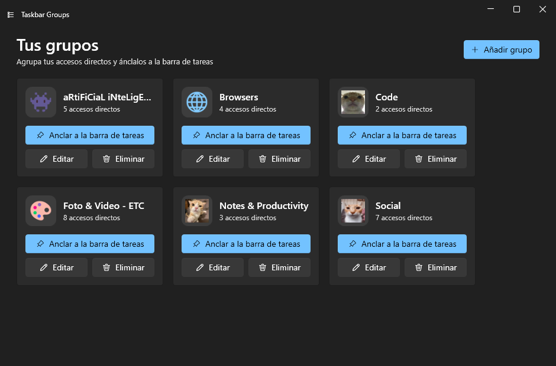
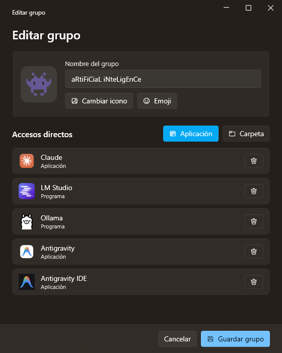
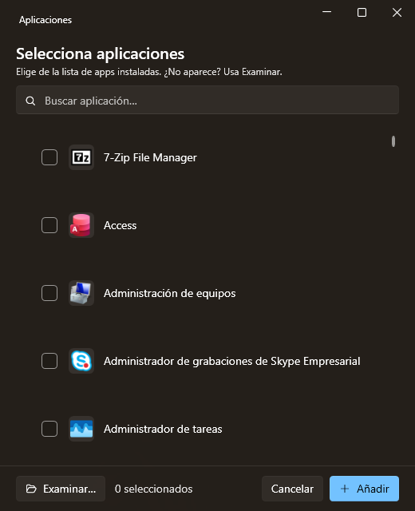
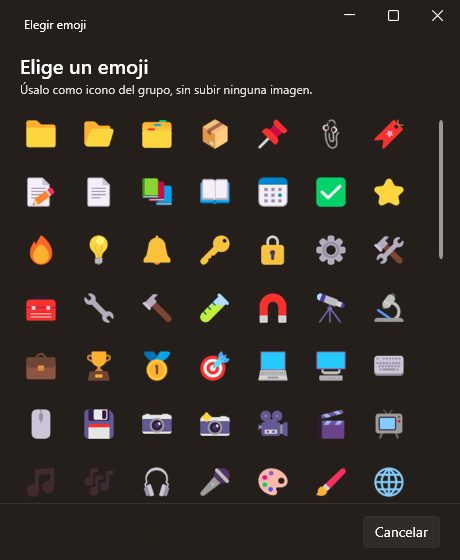
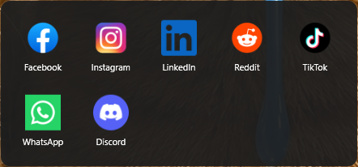

Todas tus apps
Una lista con buscador donde está todo lo que tienes instalado, de escritorio y de la Microsoft Store. Sin buscar el ejecutable a mano.
Taskbar Groups mete tus accesos directos en un solo botón de la barra de tareas. Lo pulsas y se abre un panel con todas las apps del grupo. Gratis, open source y con el aspecto de Windows 11.
Windows 10/11 · instalador de un clic · se actualiza solo · licencia MIT
Pruébalo aquí mismo
Esto es una recreación de tu barra de tareas. Pulsa el grupo señalado y mira qué pasa.
Diseño
Por qué te va a gustar
Una reescritura en WPF / .NET 8 del clásico Taskbar Groups, con interfaz Fluent.
Una lista con buscador donde está todo lo que tienes instalado, de escritorio y de la Microsoft Store. Sin buscar el ejecutable a mano.
Salen del mismo sitio que los coge el menú Inicio: nítidos, transparentes y el que le toca a cada app.
Recorta y amplía cualquier imagen, o elige directamente un emoji a color. Sin saber de diseño.
El tema claro u oscuro, tu color de acento y el idioma (español o inglés) los coge de tu sistema.
La app de verdad
Capturas reales, no maquetas. Pulsa cualquiera para ampliarla.

Cada tarjeta es un grupo que puedes anclar, editar o borrar.

Le pones nombre, le pones icono y añades apps o carpetas.

Todo lo instalado, con buscador y con su icono correcto.

¿No tienes imagen? Un emoji a color te vale de icono del grupo.

Pulsas el grupo anclado y sus apps aparecen sobre la barra de tareas.
Así de corto
A hombros de gigantes
Esto es una reescritura, no una idea original. A cada cual lo suyo.
La app original de tjackenpacken, y la idea detrás de todo esto.
El fork de la comunidad del que arrancó esta reescritura.
La librería de controles Fluent que le da a la app su aspecto de Windows 11.
Gratis y open source. Sin registros, sin cuentas, sin anuncios.
Se instala en tu usuario, sin permisos de administrador. Windows puede avisar de «editor desconocido»: pulsa Más información → Ejecutar de todas formas.